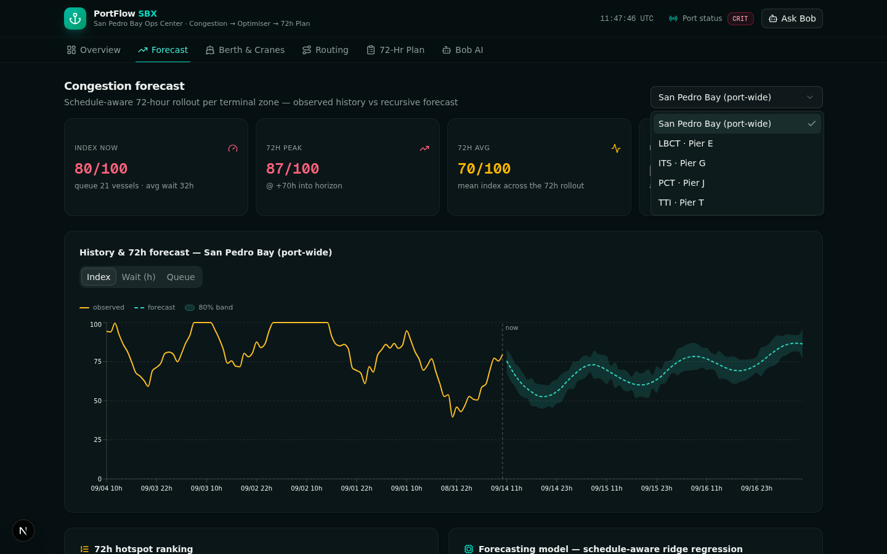
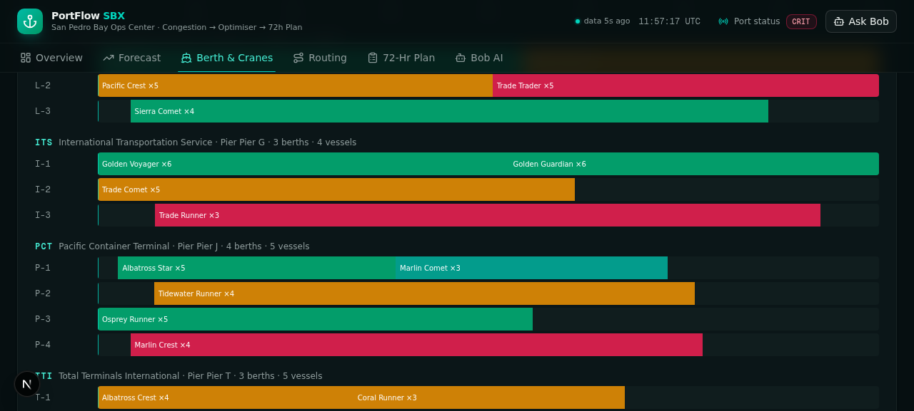
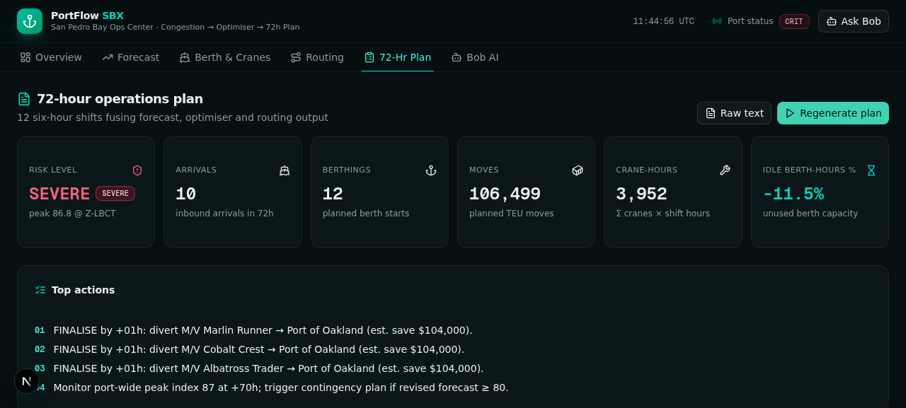
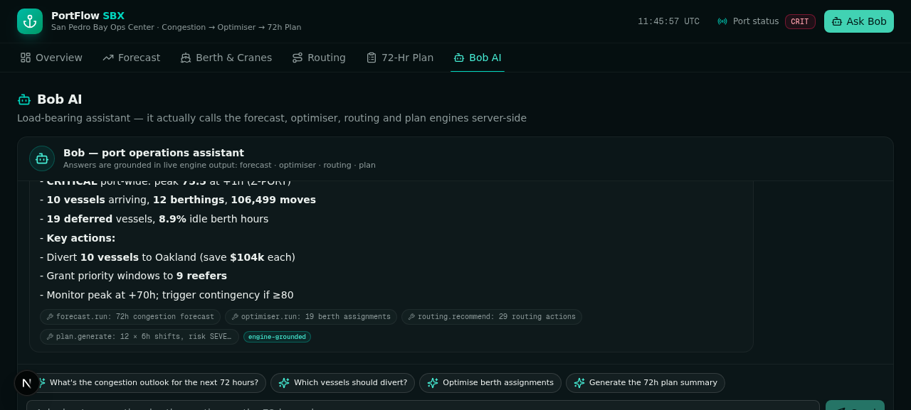
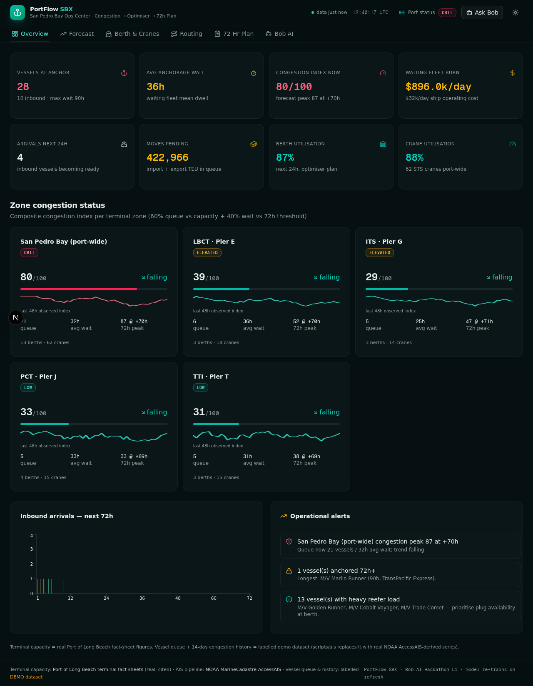

Container congestion predictor & port operations optimiser — a 72-hour decision cockpit that forecasts hotspots, reroutes vessels, optimises berths & cranes, and writes the shift-by-shift operations plan.
In 2021, San Pedro Bay — the busiest US container gateway — became a floating warehouse. Berth, crane and yard planning ran on spreadsheets, hotspots were discovered reactively, and routing was decided after vessels were already on final approach.
Spreadsheet berth planning — manual assignments, no lookahead, contradictions found at the shift meeting.
Reactive hotspot discovery — congestion is measured after the queue has already exploded.
Routing decided too late — divert/slow-steam options priced when it is too late to act on them.
SOURCES: SOUTHERN CALIFORNIA MARINE EXCHANGE QUEUE COUNTS · 2021 BACKLOG REPORTING
| Terminal | Pier | Berth length | Cranes | Capacity |
|---|---|---|---|---|
| LBCT | Pier E | 4,200 ft | 18 STS | 3.5M+ TEU/yr |
| ITS | Pier G | 4,250 ft | 14 | n/a |
| PCT | Pier J | 5,902 ft | 14 | n/a |
| TTI | Pier T | 5,000 ft | 16 | n/a |
MODELLED: 13 WORKING BERTHS · 62 CRANES AFTER PUBLISHED SPLITS
PORT-WIDE POLB: 80 BERTHS · 10 PIERS · 71 POST-PANAMAX CRANES
SOURCES: POLB TERMINAL FACT SHEETS (CITED IN DOCS/)
The vessel queue & congestion history ship as a clearly-marked DEMO_AIS dataset — every record is labelled at the API and in the docs.
The replacement path is real and tested: scripts/ais turns a genuine NOAA AccessAIS export into the engine's exact series format — anchorage classification, per-MMSI dwell, hourly queue/wait aggregation, identical index formula.
Schedule-aware features. 14 inputs — inbound-ETA arrival pressure, berth load factor, diurnal terms, queue state, weather flag.
Ridge regression. Normal equations + Gaussian elimination, λ = 3.0 — trained per zone on hourly history.
Recursive rollout. 72 one-step forecasts with damped recursion (δ = 0.75) — no flat-line saturation.
Honest uncertainty. 48h holdout + 12 multi-origin rollouts → per-horizon σ, 80% bands (±1.2816σ), MAE & skill reported.

Priority selection — weighted score (anchored time, LOA, moves, reefers) picks the serviced set under the 72h horizon.
Ready-time sequencing — FIFO within equal priority; long berths reserved by mismatch penalty (+8 score).
Swap + gap-insertion — interleaved local search packs the schedule; 28 moves/crane-h, ≤8 cranes, 2h buffer.

Cost model: $32k/day operating cost, $180/unit reefer spoilage risk, 35% slow-steam fuel saving — every recommendation ships with a ranked savings estimate, confidence and a rationale naming its numbers.
| Alternate port | Distance | Transit |
|---|---|---|
| Oakland | 500 nm | 33 h |
| Seattle-Tacoma | 1,180 nm | 79 h |
| Prince Rupert | 1,260 nm | 84 h |
| Ensenada | 150 nm | 10 h |
17 DIVERT · 2 SLOW-STEAM · 10 PRIORITY · 9 HOLD — COMPUTED LIVE FROM FORECAST WAITS
The plan generator fuses all three engines into a single, shift-by-shift document a supervisor can actually run — JSON for systems, human-readable text for the wall.
Arrivals & berthings — per shift, with zone and berth, from forecast + optimiser.
Crane deployment — per terminal, per shift, capped at the 72h horizon.
Congestion alerts — WATCH / WARN / CRIT with peak index and hour per zone.
Routing actions — divert/slow-steam orders with decide-by deadlines.
Supervisor checklists — tickable in the UI; printable raw text with copy & download.

Intent detection — forecast, berths, routing, plan… or free-form.
Real engine calls — Bob executes the actual pipeline server-side.
Grounded prompt — strictly the engine JSON; no invented numbers allowed.
LLM synthesis — z-ai-web-dev-sdk, backend-only, with tool-action metadata.
Deterministic fallback — if the LLM is unavailable, Bob answers from the engines directly.

Hotspots seen before they form — not after the queue explodes.
Optimiser vs FIFO on real constraints: +10.4% moves, 19 serviced.
$-priced alternates while slow-steam is still an option.
12 shifts, alerts, checklists — fused from all engines.

REPO: README.MD · DOCS/SOLUTION-OVERVIEW.MD · DOCS/ARCHITECTURE.MD
SCREENSHOTS: DEMO/SCREENSHOTS/ · VIDEO: DEMO/DEMO-VIDEO-LINK.TXT